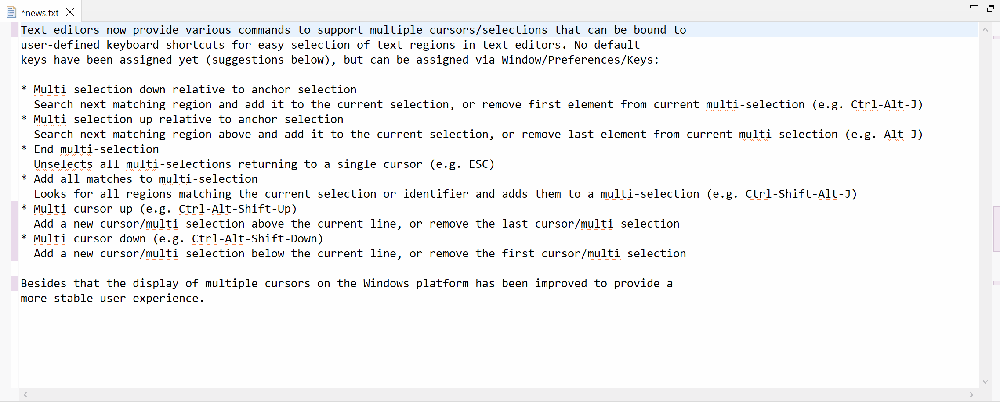
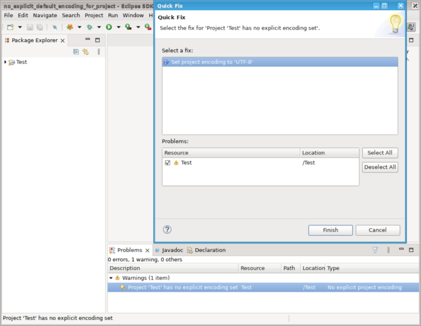

Here are descriptions of some of the more interesting or significant changes made to the Eclipse Platform for the 4.24 release of Eclipse. They are grouped into:
Plug-in developers will also be interested in the corresponding What's new document in the plug-in developer's guide.
We also recommend to read the Tips and Tricks.
Views, Dialogs and Toolbar |
|
| Welcome screen doesn't change toolbar visibility anymore | The Welcome screen will not hide the toolbars anymore in its maximized state to behave similar like a regular view. |
| Find Actions can open files from file system | The Find Actions command, usually accessible with Ctrl+3, now allows to open a file if the query is the path of an existing file on the filesystem. |
Text Editors |
|
| Action commands for multiple carets/selections |
Text editors now provide various commands to support multiple carets/selections that can be bound to
user-defined keyboard shortcuts for easy selection of text regions in text editors. No default
keys have been assigned yet (suggestions below), but can be assigned via Window > Preferences > Keys:
 |
Preferences |
|
| Explicit encoding set for new workspaces |
If Eclipse is started without explicit default encoding set, UTF-8 will be set as the default encoding
for new workspaces.
In case some encoding was specified at Eclipse startup either as a JVM
system property After that all new projects created in new workspaces will also have explicit default encoding set (they will derive that from the workspace encoding and not from some random encoding taken from current OS settings). Existing workspaces or projects with encoding already set will be not affected and will keep their original encoding. |
| Explicit encoding set for new projects |
All new projects created with 4.24 release will have explicit default project encoding set after creation, based on the workspace default encoding.
As a result, a new project will always have
|
| Warning for projects with no explicit default encoding |
A warning marker is now created for projects with no explicit default encoding. The marker has a quick-fix, that sets the project default encoding to the workspace encoding. Having explicit project encoding eases sharing projects between workspaces with different encodings.  |
Debug |
|
| Debug thread names |
The daemon threads for monitoring the streams of a debugged programm now have names
containing PID and launch config name of the debugged process. Like: "Output Stream Monitor for PID $PID$ $ILaunchConfiguration.name$". There are 4 threads per process: Output Stream Monitor, Input Stream Monitor, Error Stream Monitor, Process monitor. |